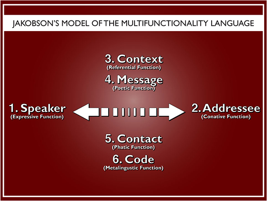
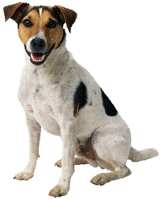
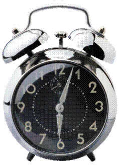
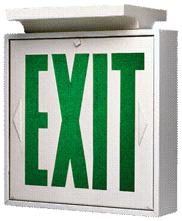

Beatriz Reyes-Foster
Module 1: Language is Socially Charged
Four Key Terms in Linguistic Anthropology
In the following section we will be discussing terms identified by Ahearn as four key terms in linguistic anthropology. These terms are meant to be used throughout the semester as we continue to work with the textbook and supplementary readings. They are our theoretical and analytical tool kit; we will use these terms as we analyze class material. Therefore, it is important that you clearly understand each of these terms, what they explain, and how they can be used in linguistic anthropological analysis.
Jakobson’s Model of Multifunctionality
Linguistic anthropologists use the term “multifunctionality” to refer to the many different things that we “do” with words and utterances. The term “multifunctionality of language” comes from the work of Roman Jakobson, who identifies six different functions of linguistic utterances.

For further practice in identifying and classifying utterances, use this Kogneato learning game.
Language ideologies
Have you ever heard anyone exclaim “French is such a romantic language!” or “This is America, speak English!”? These are examples of some of the ideas we construct about language. There is nothing inherently romantic about a language. The idea that one country=one language is also not universal, but is geographically limited and socially constructed. These are examples of ideas and beliefs that people hold about language. We call these ideas and beliefs language ideologies.

Language ideologies tell us about a society’s understanding of others and itself. Studying language ideologies in a given culture can be extremely revelatory of what is important to a group of people. They are revelatory of societal constructs of race, gender, class, and regionalisms and are an interesting filter for understanding social hierarchy. The most important thing to consider when thinking about language ideologies? We all have them!!!
As you read your text, pay special attention to Kroskity’s four features that characterize language ideologies (pg. 13).
Practice
Practice theory, usually attributed to --and associated with-- the work of sociologist Pierre Bourdieu, departs from the premise that structures (social and linguistic) both constrain and give rise to human actions, which in turn create, re-create, or re-configure these same actions. In other words, our social reality both shapes and is shaped by our actions. Our agency is at once constrained by the social and linguistic structures around us but at the same time gives us the ability to change and transform those same structures.
What determines whether social structure can be changed by our actions? A key concept in understanding individual actions in practice theory is habitus, a set of embodied predispositions that guide –but do not determine-- the way we act.
In your reading, pay special attention to the concept of emergence and how practice theory accounts for agency and social change.
Indexicality
Indexicality emerges from Peirce’s ideas about semiotics, meaning-making through signs. This meaning-making process involves three components: signs, whatever stands for something else, objects, the “something” the sign stands for, and (most importantly) interpretants, the effect or outcome of the semiotic relationship.
There are three types of signs, the second of which leads to the concept of indexicality.
-
Icon: A sign that refers to its object by means of similarity. Examples: photographs, diagrams, sketches, onomatopoeia.

-
Index: A sign that refers to its object because of a dynamical connection between the object and the person who may be functioning as an interpretant. In other words, an index “points to” it object through a connection of continuity. Examples: a clock, smoke (which indexes fire), and bodily habits and gaits (the book uses the example of a sailor’s rolling gait, but there are other types of body languages that index certain professions or lifestyles).

-
Symbol: A sign that refers to its object by virtue of convention or habit. Examples: most words, street signs, letters and other forms of writing.

Why is the concept of indexicality important to thinking about the socially charged nature of language?
In Conclusion…
Armed with this “theoretical toolkit,” we end this unit by remembering, once again, that language, culture, and social relations are all intertwined: language is socially charged. Remember these concepts as you continue to study the course materials, and think about how these concepts can help you better understand not only that language and culture are intertwined, but how.
I look forward to meeting you all in our first f2f class next week!!!
Disclaimer
The material presented in this module is not exhaustive; it is meant to function as a guide to our course materials. Concepts, key terms, and ethnographic examples that appear in our readings or that are discussed in future f2f classes can and will be used in assessments even if they are not specifically mentioned in this course module.